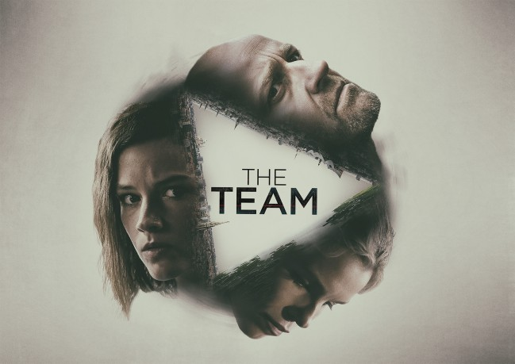

")
 
 IMDB-Wertung: 6.9 / 10
IMDB-Wertung: 6.9 / 10  Metascore:
Metascore: 
In «The Team» wird die Geschichte eines dieser europäischen «Joint Investigation Teams» erzählt: Harald aus Dänemark, Jackie aus Deutschland, Alicia aus Belgien, die gemeinsam die Machenschaften einer der grössten und skrupellosesten Verbrecherorganisationen Europas aufdecken. Ihre Suche nach der abscheulichen Wahrheit führt sie in Abgründe von Tod und Zerstörung und fordert nicht selten hohe persönliche Opfer.
Jahr: 2015
Dauer: 57 Minuten
FSK:
Land: Schweiz Studio: ZDFTonspuren: DTS - ,
Untertitel:
Auflösung: 720p (1280x720) Größe: 1658 MB
Regisseur: Kasper Gaardsøe, Kathrine Windfeld, Jannik Johansen
Drehbuch: Jesper Bernt, Mai Brostrøm, Donna Sharpe, Peter Thorsboe, Kari Vidø
Soundtrack:
Darsteller:
 Lars Mikkelsen als Harald Bjorn, 8 episodes, 2015
Lars Mikkelsen als Harald Bjorn, 8 episodes, 2015 Jürgen Vogel als Gregor Weiss, 8 episodes, 2018
Jürgen Vogel als Gregor Weiss, 8 episodes, 2018 Nicholas Ofczarek als Marius Loukauskis, 8 episodes, 2015
Nicholas Ofczarek als Marius Loukauskis, 8 episodes, 2015 Navid Negahban als Said Gharbour, 8 episodes, 2018
Navid Negahban als Said Gharbour, 8 episodes, 2018 Carlos Leal als Jean-Louis Poquelin, 8 episodes, 2015
Carlos Leal als Jean-Louis Poquelin, 8 episodes, 2015 Marie Bäumer als Barbara, 8 episodes, 2018
Marie Bäumer als Barbara, 8 episodes, 2018 Miriam Stein als Natascha Stark, 8 episodes, 2015
Miriam Stein als Natascha Stark, 8 episodes, 2015 Nora von Waldstätten als Lucy Meyer, 8 episodes, 2018
Nora von Waldstätten als Lucy Meyer, 8 episodes, 2018 Filip Peeters als Bruno Koopmann, 8 episodes, 2015
Filip Peeters als Bruno Koopmann, 8 episodes, 2015 Erwin Steinhauer als Mr. Adams, 8 episodes, 2018
Erwin Steinhauer als Mr. Adams, 8 episodes, 2018 Marc Benjamin als Max Ritter, 8 episodes, 2015
Marc Benjamin als Max Ritter, 8 episodes, 2015 Jella Haase als Bianca Loukauskis, 8 episodes, 2015
Jella Haase als Bianca Loukauskis, 8 episodes, 2015 Sunnyi Melles als Iris Gabler, 8 episodes, 2015
Sunnyi Melles als Iris Gabler, 8 episodes, 2015 Andreas Pietschmann als Elias Mueller, 8 episodes, 2015
Andreas Pietschmann als Elias Mueller, 8 episodes, 2015 Mark Heap als Albert, 8 episodes, 2018
Mark Heap als Albert, 8 episodes, 2018 André Hennicke als Rainer Stark, 8 episodes, 2015
André Hennicke als Rainer Stark, 8 episodes, 2015 Nadeshda Brennicke als Dahlia Loukauskis, 8 episodes, 2015
Nadeshda Brennicke als Dahlia Loukauskis, 8 episodes, 2015 Troels Lyby als Carsten Holm, 5 episodes, 2018
Troels Lyby als Carsten Holm, 5 episodes, 2018 Max Hubacher als Bastian, 4 episodes, 2018
Max Hubacher als Bastian, 4 episodes, 2018 Milton Welsh als Theo Janke, 4 episodes, 2015
Milton Welsh als Theo Janke, 4 episodes, 2015 Thomas Voss als Black Clad Man, 3 episodes, 2015
Thomas Voss als Black Clad Man, 3 episodes, 2015 Natalia Avelon als Elena Weiss, 2 episodes, 2018
Natalia Avelon als Elena Weiss, 2 episodes, 2018 Leo Gregory als Mikey Jones, 2 episodes, 2015
Leo Gregory als Mikey Jones, 2 episodes, 2015Datei: X:\HD-Serien\Team, The\S01\The Team S01E01.mkv seit 02.01.2019
Festplatte: HD Serien(SU-Z)+Dokus+Musik
 Es gibt insgesamt 182 Filme in der Gruppe 'HD-Serien'
Es gibt insgesamt 182 Filme in der Gruppe 'HD-Serien'